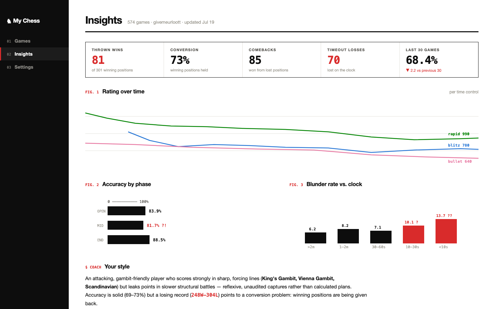
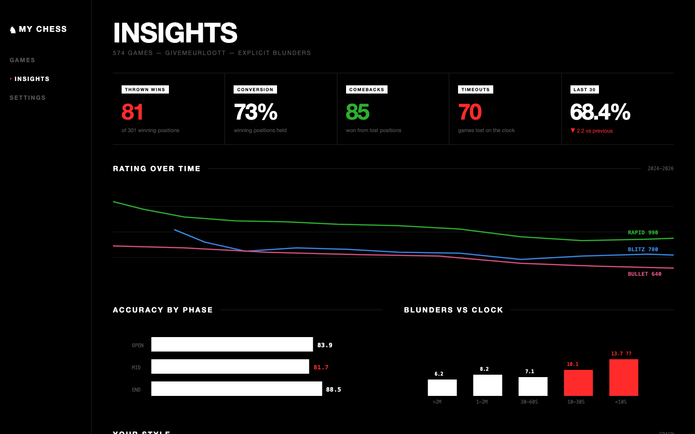
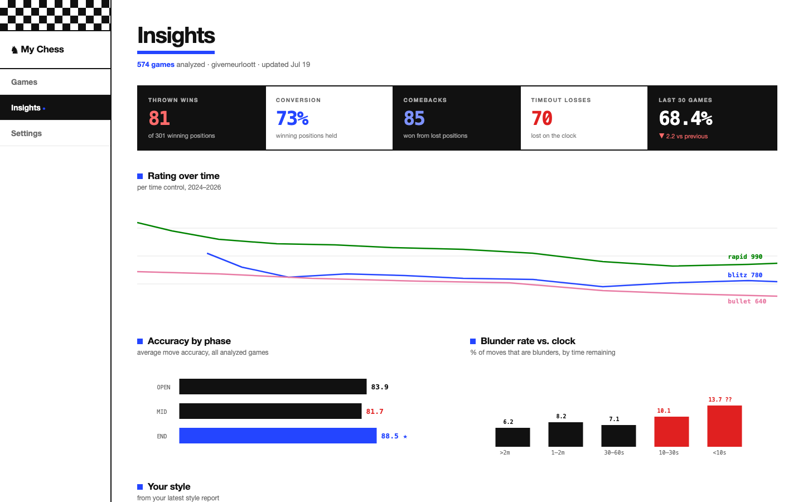

My Chess — three UI themes
All black & white foundations; color reserved for graphs, key data, and emphasis. Tell me 1, 2, or 3 (or mix & match).
1 — Scoresheet ■
White paper, black ink, like a chess book. Red annotation ink used only on damaging numbers (thrown wins, timeouts, blunders — the "??" moves). Charts numbered like book figures (FIG. 1, 2, 3). Black sidebar with numbered nav.

2 — Noir ■
True-black background, heavy uppercase type, white bars/labels — the Die Lit direction. Color appears ONLY as data: red for damage, green for good, chart lines. Label stickers are inverted white-on-black tags.

3 — Checkmate ■
White page with hard black blocks — the stat tiles alternate black/white like board squares, with a checkerboard strip in the sidebar. One electric-blue accent for titles' underline and highlighted data; red still reserved for damage.
